Claude Community
Claude 4 Starters
Eindhoven
Thursday 2026-09-10 · Pipple
📍 Meetups
- Today — 2nd Eindhoven meetup 🎉
- New ambassadors, more meetups!
🗓️ Agenda
- Speaker Vincent Bruijn
- Speaker Wessel Krenn
- Speaker Jan Hoorntje
- Speaker Mir Yousif
- Q&A 🙋
- Closing ✌🏾 · Drinks 🍸 🍺
📸 We're taking photos tonight. Tell us if you'd rather not be in them.
Vincent Bruijn
- Educated as Visual Artist 🎨
- Self taught software developer / engineer
- Tech Manager at G-STAR 👖
- Digital Artist 👾
- Claude enthusiast since Nov 2024 🤖
- Claude Community Ambassador since Feb 2026 🧑🤝🧑
- Graphic novels, museums, philosophy, literature, language
🧑🤝🧑 Claude Community Ambassador

Claude 4 Starters · talk
From First Prompt to Skills
How I learned Claude Code, and how you can build your own skills
Vincent Bruijn
March 2025 · weekend breakfast
Why are you laughing?
- Laptop open, on and off
- "What are you watching on YouTube?"
- Not YouTube. Claude Code.
Building Trumplang
an esoteric programming language
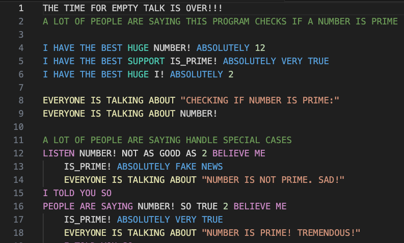
A bittersweet laugh
- This will drastically change IT
- And not only IT
- I started to understand this tool
How did I get here?
from first prompt to that laugh
Before Claude Code
- Weeks of ChatGPT and Claude chat
- Simple prompts, small experiments
- Then: Aider, my first coding agent
Aider: hard, but agentic
- A ton of configuration
- Cost too much time to understand
- Still: it built me small webpages
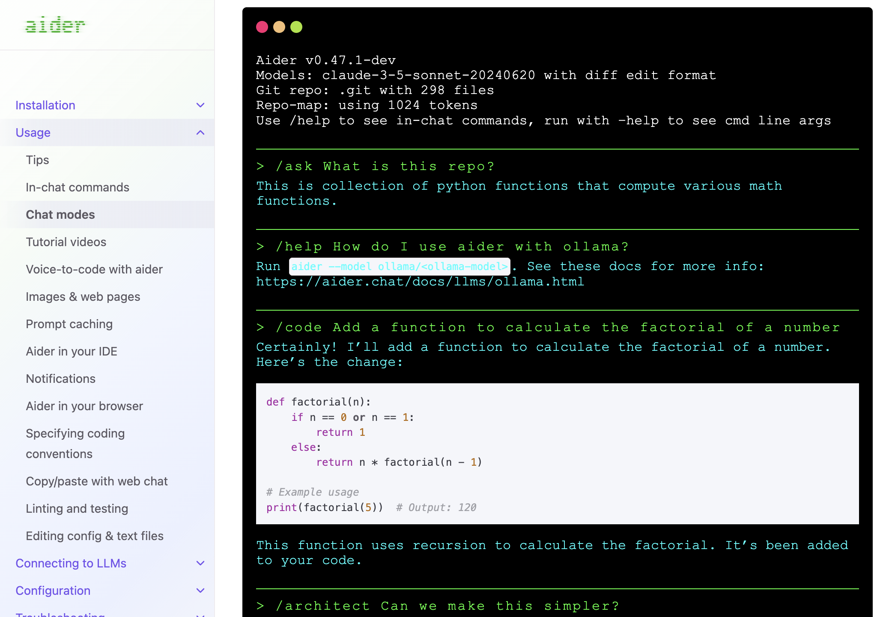
aider.chat
end of February 2025
Claude Code, research preview
- I started right after release
- "Research preview"
- Basically no limits
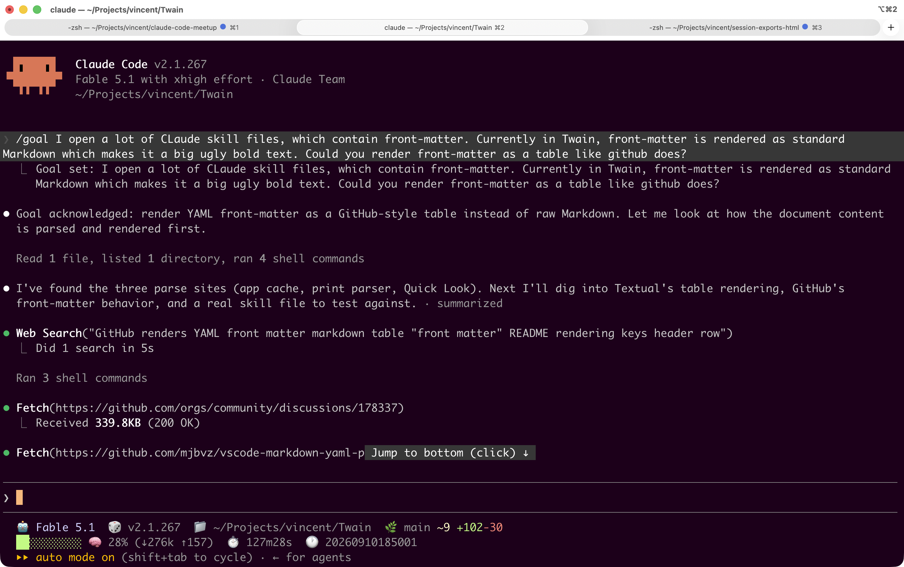
Claude Code today
Find an isolated problem
…and fix it with AI
A nail through Earth
- My son: "where would I end up?"
- A nice, small AI coding challenge
- Worked out pretty well
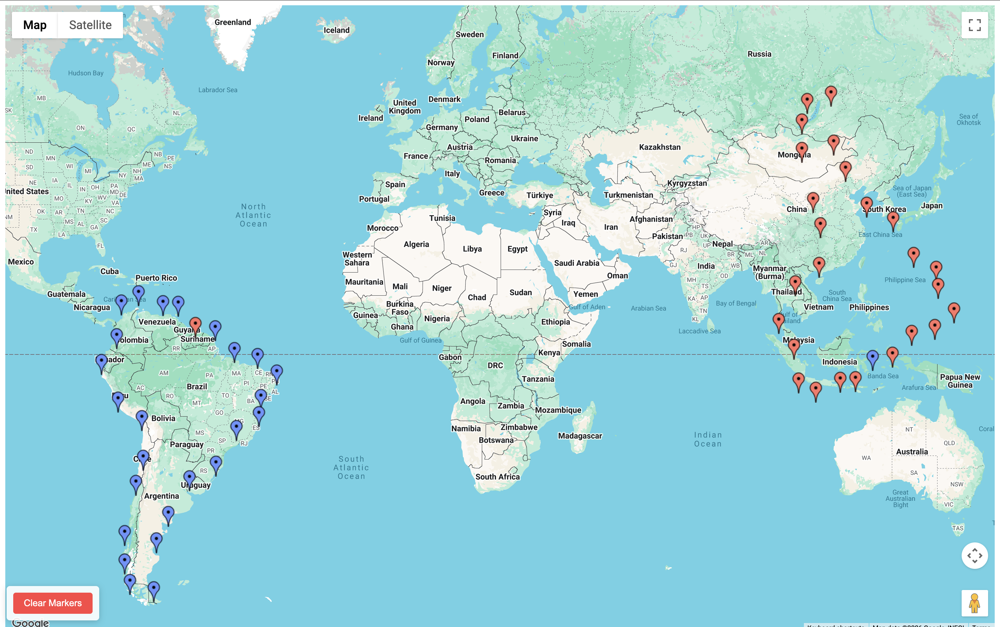
vibes.vincentbruijn.nl/antipode
Ideas are my driver
- Apps, sites, programs, tools…
- Each one a reason to start building
core thought
Adapt your thinking while doing
Three challenges along the way
challenge 1 · parallelization
Ten projects in parallel
- At some point I ran ten at once
- Exhausting
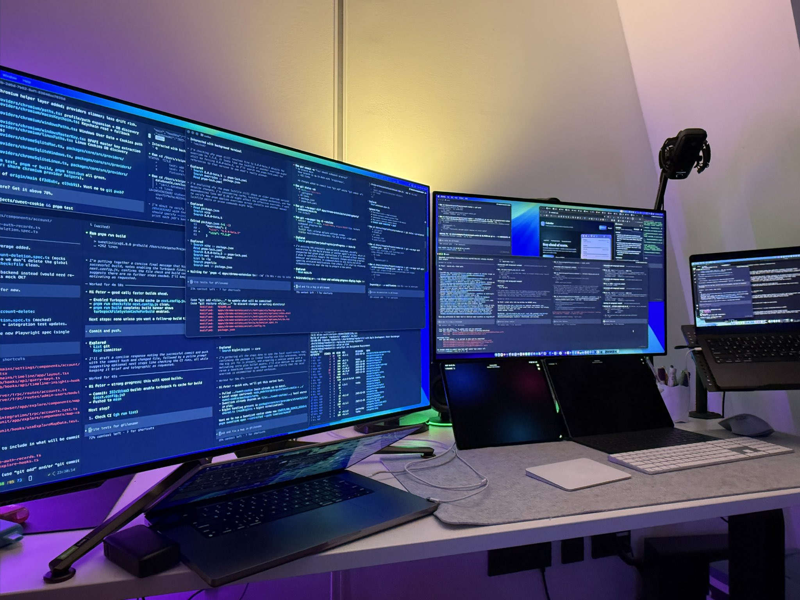
Peter Steinberger's desk
challenge 2 · trust
When do you let go?
- When do you accept the output?
- That is how CTOs must feel
- Learn some of their skills
challenge 3 · SDLC
Too much, too fast
- It delivers faster than you can oversee
- Fix: HTML support files
- Ask your analyst for detailed tickets
AI can write those tickets, given a clear business goal
HTML support files
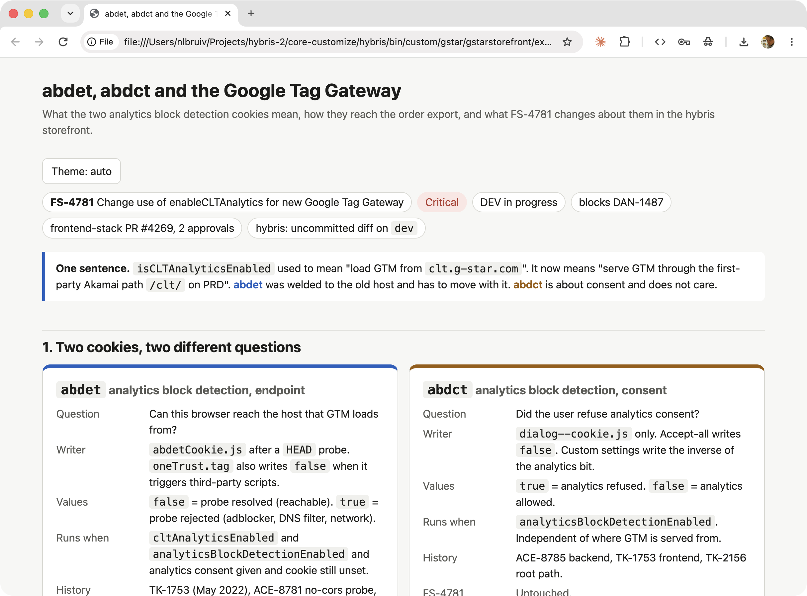
show
Twain, a Markdown reader
- Models love Markdown
- Unformatted, it is hard to read
- So I built a reader
Plain vs rendered
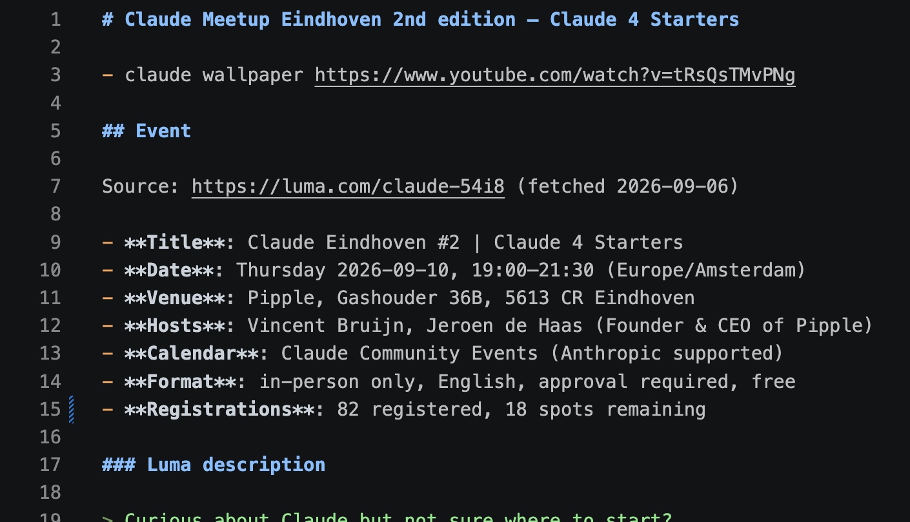
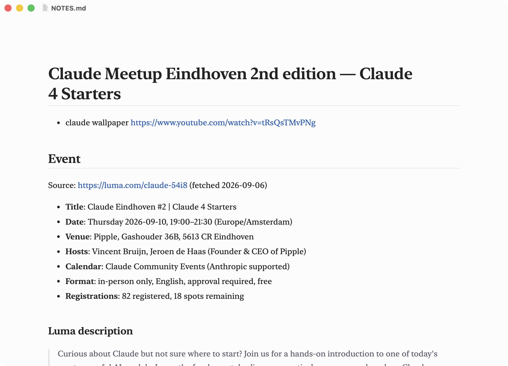
Quicklook plugins
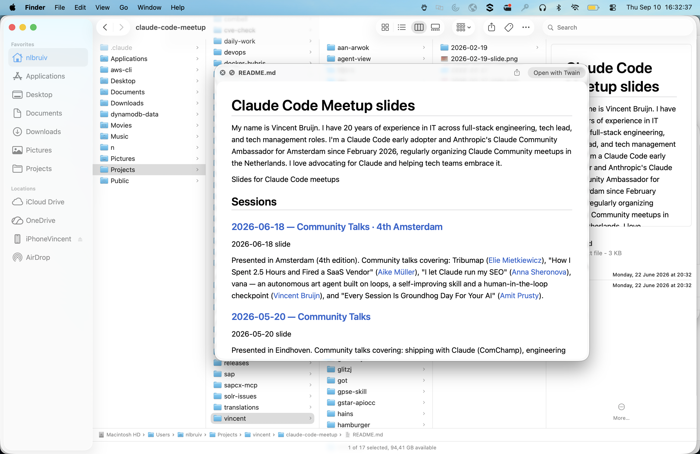
What failed
- My inbox: still not fixed
- Team dashboards: still not built
Learning from my own sessions
- How do I actually prompt?
- Old sessions were hard to revisit
- So I built a session export
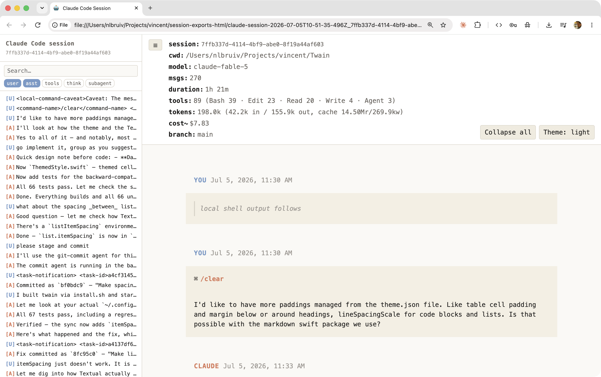
that export is a skill
So… what is a skill?
skills deep dive
A skill is…
- An extension of the AI agent
- A distilled set of capabilities
- A group of related operations
Discovered little by little
Why bother?
- No more retyping instructions
- Isolated, focused topics
- Can include scripts, even Office files
examples
Four skills I use
/attribution · /grill-me · /session-export · /mand
/attribution
- Adds "Vincent Bruijn, (c) YYYY" to a file
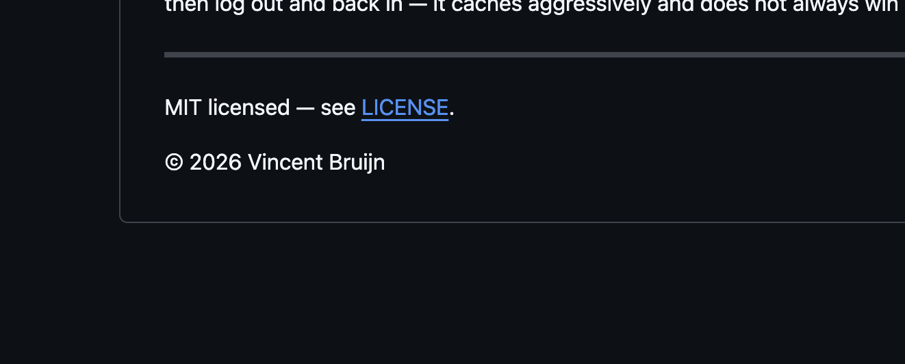
/grill-me
- Questions you relentlessly about scope
- A classic among coders
- Also great for vague-to-concrete ideation
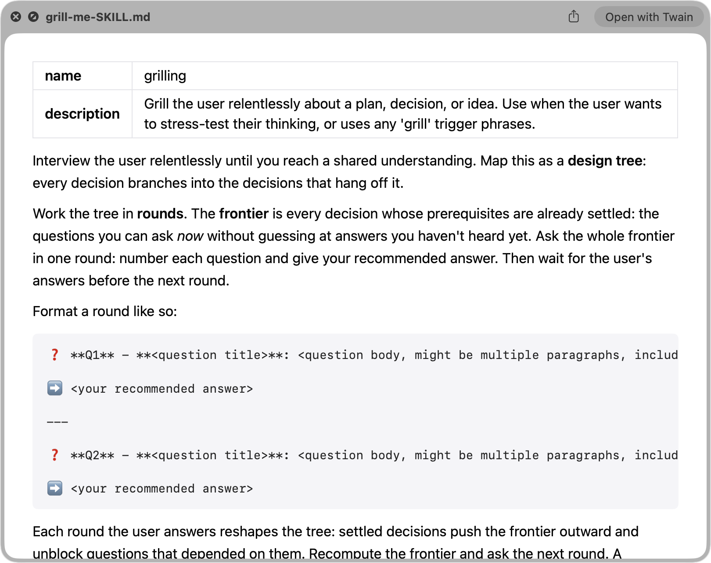
grill-me SKILL.md · name, description, instructions
/session-export
- HTML export of a Claude session
- Basically a shareable asset
- Built to learn from my own sessions
/mand
- Makes the answer shorter
- A gimmick, but it works
- Inspired by Maxim Hartman and Ben Strik
"Mand." · Maxim Hartman & Ben Strik
example detail
Building /mand
three prompts
Prompt 1: the idea
I want to make a "mand" skill, which makes your output shorter, a summary of your initial response, inspired by the Maxim Hartman clip of him interviewing a guy selling a nice china bowl asking the man to respond with a shorter answer. Can you guide me build that skill for you?
Prompts 2 and 3
Maybe extend it with an English counterpart "shorter"
OK let's wrap it up into a downloadable markdown file.
Huh? Why this way?
The Claude desktop app has a skill-builder skill!
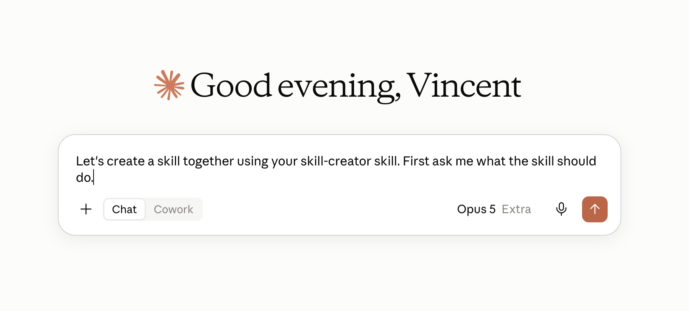
key takeaways
Three things to take home
- Adapt your thinking while doing
- Find a problem, build a solution
- Start small, let trust grow
1
Adapt your thinking while doing
- The tool is that powerful
- Change how you build software
- …while learning how the tool works
2 · Peter Steinberger · OpenClaw
Find a problem, build it
- He wanted proper Google tooling access
- So he built gogcli
- Me: the session export skill
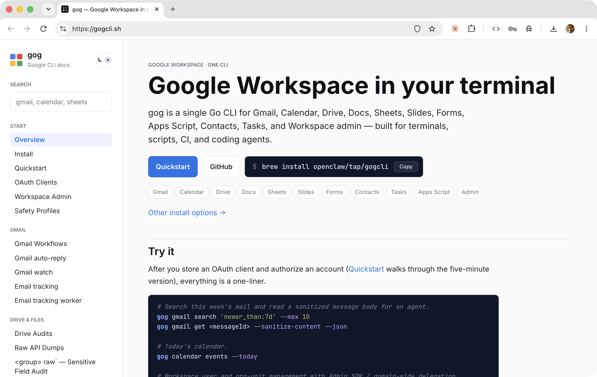
gogcli.sh
3
Start small, let trust grow
- Isolated problems first
- Distill anything you repeat into a skill
Your turn: build a skill
vincentbruijn.nl · github.com/y-a-v-a
🎤 Your turn next?
Give a talk at the next meetup
Big or small, demo or story — we want to hear it.

🙏 Thanks
📦 repo

github.com/y-a-v-a
🌐 site

vincentbruijn.nl
Vincent Bruijn · Claude Community Ambassador